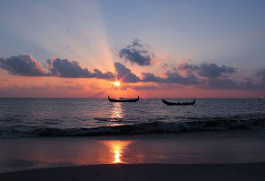
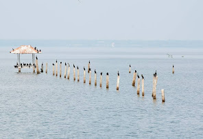

Alappuzha

Alappuzha (or Alleppey) is a city on the Laccadive Sea in the southern Indian state of Kerala. It's best known for houseboat cruises along the rustic Kerala backwaters, a network of tranquil canals and lagoons. Alappuzha Beach is the site of the 19th-century Alappuzha Lighthouse. The city's Mullakkal Temple features a traditional design. Punnamada Lake's snake boat races are a well-known annual event.
Places to visit
1. Alappuzha Beach
Alappuzha Beach is a beach in Alappuzha town and a tourist attraction in Kerala, India. Beach has an old pier which extend to sea is over 150 years old. Alappuzha beach host many events annually like Alappuzha beach festival, Sand art festival and many more.
2. Vembanad Lake
Vembanad is the longest lake in India, and the largest lake in the state of Kerala[Mangrove with area 2114 sq. Km is the second largest Ramasar site in India only after Sunderbans in West Bengal] Spanning several districts in the state of Kerala, it is known as Vembanadu Lake in Alappuzha, Punnamada Lake in Kuttanad and Kochi Lake in Kochi. Several groups of small islands including Vypin, Mulavukad, Vallarpadam, Willingdon Island are located in the Kochi Lake portion.